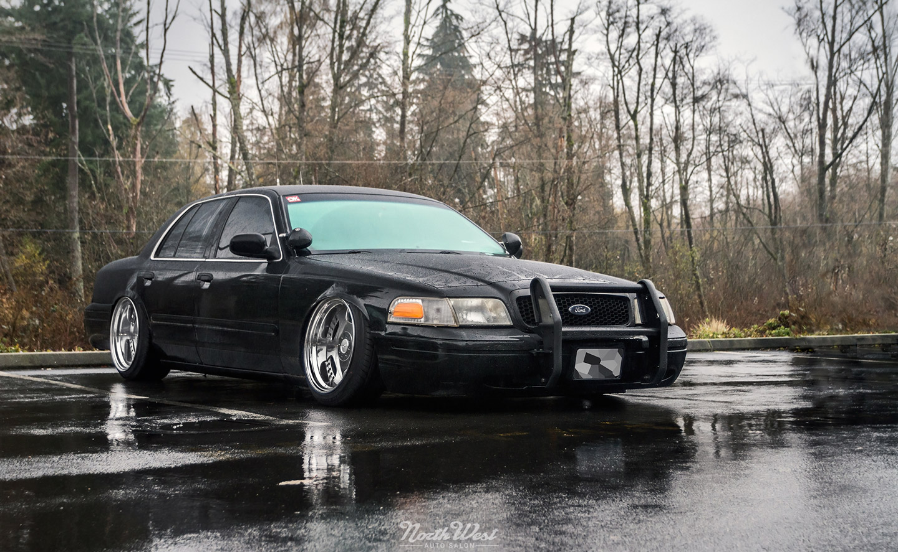

The Ford Crown Victoria ("Crown Vic")[2][3] is a full-size sedan that was marketed and manufactured by Ford. The successor to the Ford LTD Crown Victoria, two generations of the model line were produced from the 1992 to 2012 model years. The Ford counterpart of the Mercury Grand Marquis, the Crown Victoria was the largest sedan marketed by Ford in North America, slotted above the Ford Taurus. The Crown Victoria Police Interceptor (1992–2011) was marketed specifically for law-enforcement use;[4] a long-wheelbase Crown Victoria sedan (2002–2011) was marketed primarily for taxi cab fleets. The Crown Victoria was produced on the rear-wheel-drive Body-on-frame Ford Panther platform, sharing its chassis with the Grand Marquis and Lincoln Town Car. From 1997 until their 2011 discontinuation, the three model lines were the sole four-door sedans produced in North America with a full-length frame, rear-wheel drive, and a standard V8 engine. While front and rear crumple zones were engineered into the vehicle, it was one of Fords products that weren't of unibody construction for the entire generation. For its entire production, the Crown Victoria was produced by Ford Canada alongside the Grand Marquis at St. Thomas Assembly in Southwold, Ontario, Canada. From 1991 to 2011, over 1.5 million examples (including Police Interceptors) were produced by St. Thomas Assembly prior to its closure. A 2012 Crown Victoria (intended for Middle East export) was the final vehicle produced by the facility. Following the discontinuation of the model line, the Crown Victoria was not directly replaced, with the full-size Ford Taurus serving as the next basis for Ford police cars.
Prior to the 1992 model year, Ford used the Crown Victoria nameplate on two vehicles; both were flagship models of their full-size model range. From 1955 to 1956, the nameplate was used for premium two-door Ford Fairlanes. For 1980, the nameplate returned as the top trim of Ford LTD sedans, denoting all Ford full-size sedans in North America from 1983 to 1991. A styling feature used for both versions is a stainless-steel band trimming the B-pillars ("crowning" the roof).